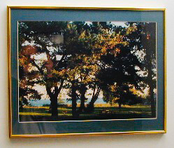

Version 3.12, Page 1, (Apr 4 2001), ©2001 by Dale Cotton, all rights reserved

Only a few months ago I was struggling through first attempts at matting and framing, so the issues and the angst are still fresh in my mind. I'll record the solution I've worked out for myself, then those with more experience will offer corrections, and I'll learn too. Michael Reichmann of The Luminous Landscape and Phillip Greenspun of photo.net both recommend the high road of having one's prints professionally customed framed. Listen to them: they are wise. Lasciate lotsa sperata voi ch'entrate (loosely: read on at your own risk!).
My do-it-yourself approach may be less expensive, particularly done in quantity, but I strongly urge you to price all materials first, rather than blindly jumping in. The one-time tools cost me about $75(Cdn), consumables for each framing run me about $35(Cdn). In comparison the local shops want roughly $100(Cdn) to do one print in an inexpensive aluminum frame.
Warning! I would never consider doing my own framing of an irreplaceable piece of art. (I would not even trust a local framing shop, at least without a recommendation from the local museum.) As you get involved in framing and matting you may find yourself bumping into a certain word: archival. A responsible framer knows which techniques and materials are needed to preserve a work of art for generations. The technique described in this document is tailored to mass-reproducible prints, such as inkjet prints. That said, if you are at all concerned about longevity, use acid-free (pH neutral) materials and do nothing to the art object that cannot be undone, such as permanently gluing it to its backmat or applying scotch tape to the corners of the print itself.
At this point, my reason for continuing with do-it-yourself framing is no longer primarily economic. Having gotten over my beginner's difficulties and since I do enjoy working with my hands, I now find framing quite satisfying, adding another enjoyable aspect to photography as a hobby for me.